Jev s'impose comme un nouveau modèle open source révolutionnaire, radicalement différent des chatbots conversationnels traditionnels. Conçu pour prendre des décisions rapides et agir directement au cœur des logiciels, il fonctionne à une vitesse impressionnante, capable d'interagir en temps réel avec des environnements dynamiques complexes à un rythme soutenu.
La vidéo démontre des cas d'usage saisissants : un véhicule autonome en simulation continue, 100 itérations réussies du dilemme du tramway, du design d'interface interactif par la voix et le texte, un détecteur de posts indésirables (slop) sur les réseaux sociaux, ainsi que des performances exceptionnelles en audit de maillage interne SEO surpassant largement Claude Opus. L'écosystème intègre également Laya, un modèle tournant localement sur Apple Silicon M3 Max capable de jouer à Snake à une cadence vertigineuse.
Cette percée technologique marque le passage d'une IA passive à des modèles dits 'System One' ultra-rapides. En réduisant drastiquement la latence et les coûts tout en s'exécutant parfois entièrement hors ligne, ces agents autonomes redéfinissent la manière dont l'intelligence artificielle s'intègre nativement dans nos applications et flux de travail logiciels.
Interface & Outils : Interface de contrôle de Jev Engineering nommée 'ROUTER AND GATE' affichée sur fond sombre avec un diagramme en réseau complexe.
Contenu textuel & Code : Le schéma détaille les flux de données et de décisions : 'user request', 'structured state', 'model router', 'frontier llm', 'mid llm', 'cheap llm', 'relevance filter', 'approval check', 'auto node gate' avec des graphiques de trafic de nœuds et d'utilisation de la couche 'LAYER STATUS'.
Action / Démonstration : Visualisation en direct du routage des requêtes utilisateurs à travers différentes couches de modèles LLM et de barrières de sécurité (gates) au sein de l'architecture Jev.
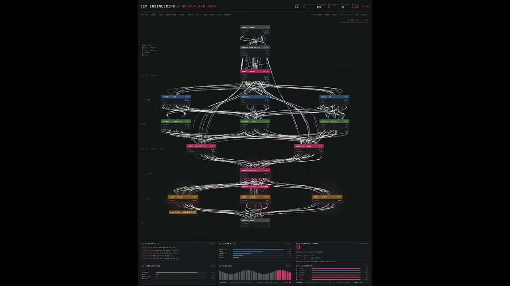
🔍 AgrandirInterface & Outils : Un simulateur de conduite 3D doté d'un tableau de bord de télémétrie en temps réel (volant, accélérateur, frein) et d'un panneau d'analyse de trajectoire sur fond noir en bas à droite.
Contenu textuel & Code : Le compteur indique une vitesse de 16.4 mph. Le volant affiche -3.0 degrés. Le panneau de télémétrie et de réseau routier affiche des métriques détaillées comme 'speed 16.1 mph', 'Jev: steering -0.075', 'p(collision) 0.02', ainsi qu'une carte vectorielle de la route avec des courbes à l'approche et des cônes de signalisation.
Action / Démonstration : Démonstration en temps réel du modèle Jev pilotant une voiture rouge sur une route goudronnée ensoleillée, gérant la direction et la vitesse de manière autonome face à des obstacles.
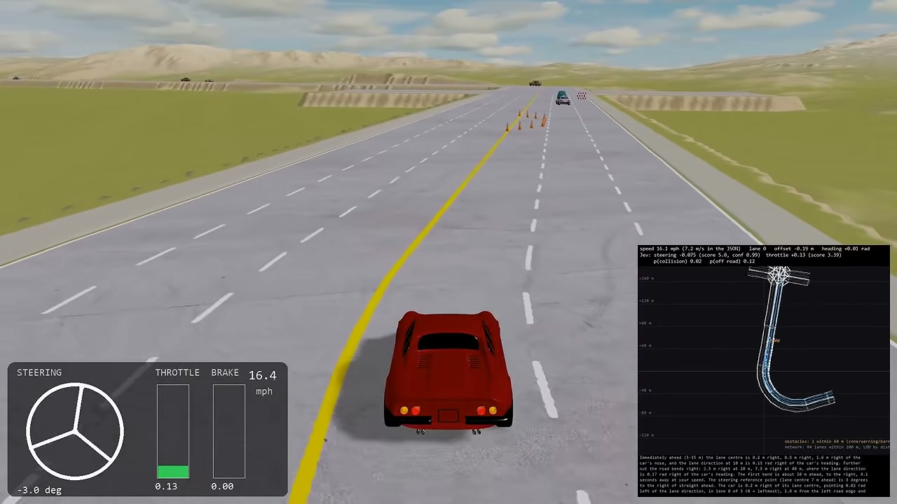
🔍 AgrandirInterface & Outils : Simulateur de conduite 3D doté d'une vue à la troisième personne depuis l'arrière d'un véhicule rouge (Jev), d'un panneau d'affichage HUD en haut (« 4x SPEED »), d'un tableau de bord virtuel en bas à gauche affichant le volant, l'accélération (THROTTLE à 0.02) et le freinage, ainsi que d'une mini-carte en bas à droite (« road network: 109 lanes within 200 m »).
Contenu textuel & Code : Les mesures en temps réel sont affichées dans l'encadré noir en bas à droite : speed 19.5 mph (8.7 m/s), lane 2, offset +0.04 m, heading +0.00 rad. Jev : steering +0.00 (score 4.0, conf 1.0), throttle +0.02 (score 3.05), p(collision) 0.12, p(off road) 0.06.
Action / Démonstration : Le véhicule rouge (Jev) navigue de manière autonome sur une route à plusieurs voies en contournant une zone de travaux signalée par des cônes oranges.
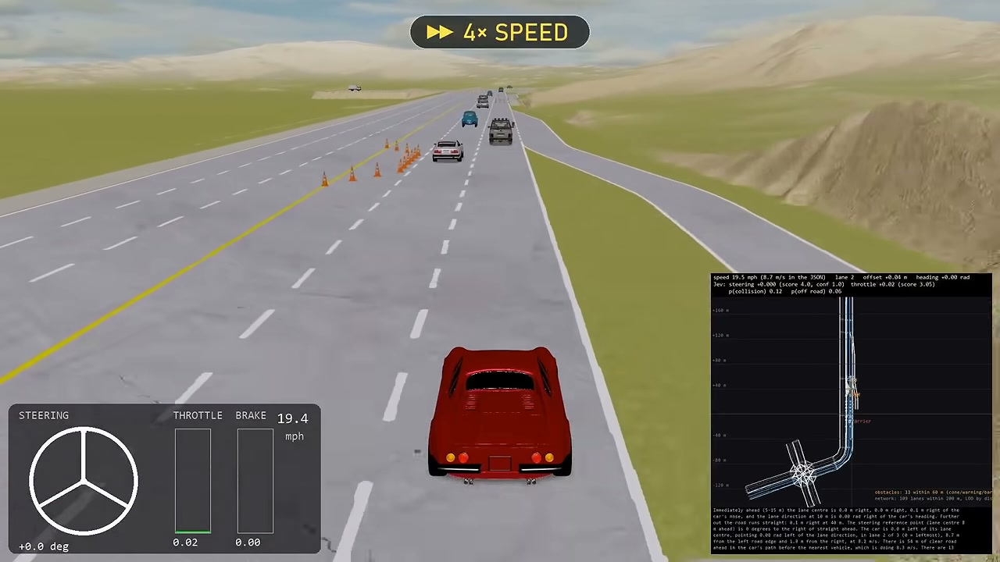
🔍 AgrandirInterface & Outils : Interface de simulation interactive nommée "JEV / DECISION EXPERIMENT 001", intitulée "The trolley problem, 100 times.". Panneau latéral droit affichant le statut de lecture (1x Playback), les essais complétés (2 / 100), les choix (Pull the lever: 2, Leave it alone: 0), et la grille de probabilité de choix en cours.
Contenu textuel & Code : Textes affichés : "TRIAL 002", "Outcome recorded", "SIDE TRACK - 1 PERSON", "MAIN TRACK - 5 PEOPLE", "5 SAVED - 1 LOST". En bas à gauche : "5 on the main track. 1 on the side track. First 5 trolleys at normal speed.".
Action / Démonstration : Démonstration du dilemme du tramway (Trolley Problem) simulé 100 fois par l'IA Jev, illustrant le choix de tirer le levier pour sauver 5 personnes au détriment d'une seule.
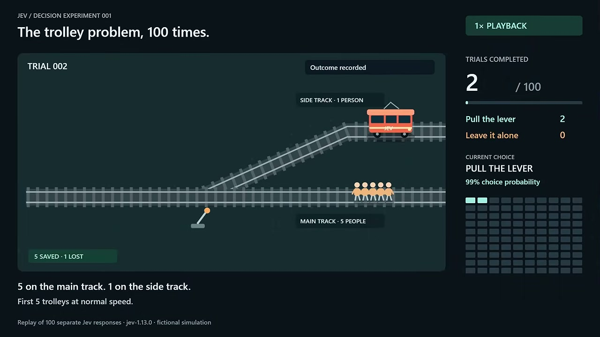
🔍 AgrandirInterface & Outils : Interface web locale (localhost:5174) dans une fenêtre de navigateur au style épuré, avec une barre de recherche centrale et une zone interactive en bas remplie d'émojis d'objets divers.
Contenu textuel & Code : Le champ de recherche contient le texte saisi : 'things a magne' (choses magnétiques / aimantées). En bas, de nombreux émojis d'objets du quotidien et d'outils sont entassés.
Action / Démonstration : Démonstration d'une interface interactive et créative propulsée par Jev, où les éléments visuels réagissent en temps réel à une requête textuelle simple pour trier ou filtrer des objets.
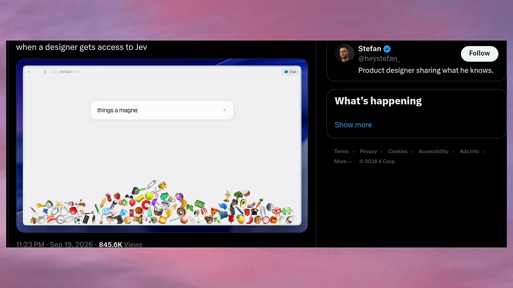
🔍 AgrandirInterface & Outils : Navigateur web affichant une application interactive locale avec une barre de recherche centrale, un bouton « Chat » en haut à droite, et une pile d'émojis divers accumulés au bas de l'écran.
Contenu textuel & Code : La barre de recherche contient la requête : "things a magnet could attract" (choses qu'un aimant pourrait attirer). Au-dessus, une liste d'émojis filtrés et générés dynamiquement (clé, boussole, ciseaux, marteau, tournevis, cadenas, trombone, pince, pièce de monnaie, trompette) est affichée en ligne.
Action / Démonstration : Démonstration interactive de Jev permettant de filtrer et faire tomber des émojis en temps réel basés sur une description textuelle thématique.
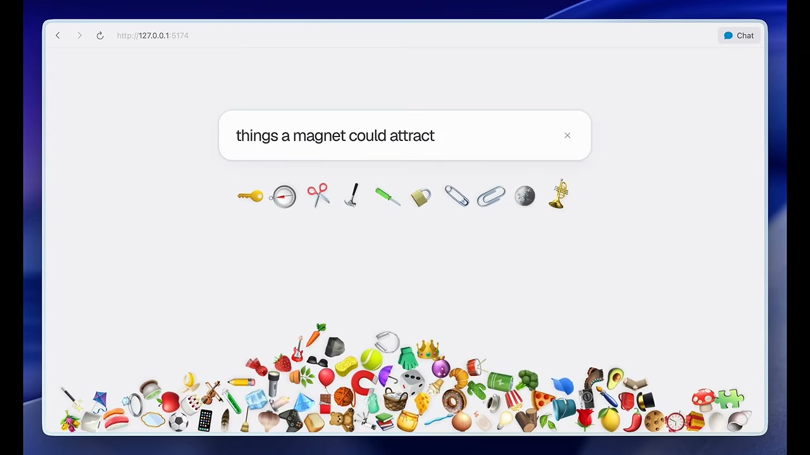
🔍 AgrandirInterface & Outils : Interface d'une application de dessin web collaborative (type tableau blanc) avec une barre d'outils en bas, une palette de formes et de couleurs en haut à droite, et un panneau de débogage et de suivi en bas affichant les inputs, les actions Jev et l'API Canvas.
Contenu textuel & Code : On observe un tableau blanc numérique comportant un cercle orange en haut à droite, un carré bleu sur la gauche, et un losange rouge (red diamond) positionné entre le carré bleu et le cercle. En bas de l'écran, les sections INPUTS, JEV et CANVAS affichent les métriques en temps réel (par exemple, action: move 100%, target: shape 3, did: moved red diamond, API: editor.updateShape).
Action / Démonstration : Démonstration de la manipulation et du déplacement d'une forme (le losange rouge) sur le canevas à l'aide de commandes combinant la voix et les gestes de la main capturés par l'IA Jev.
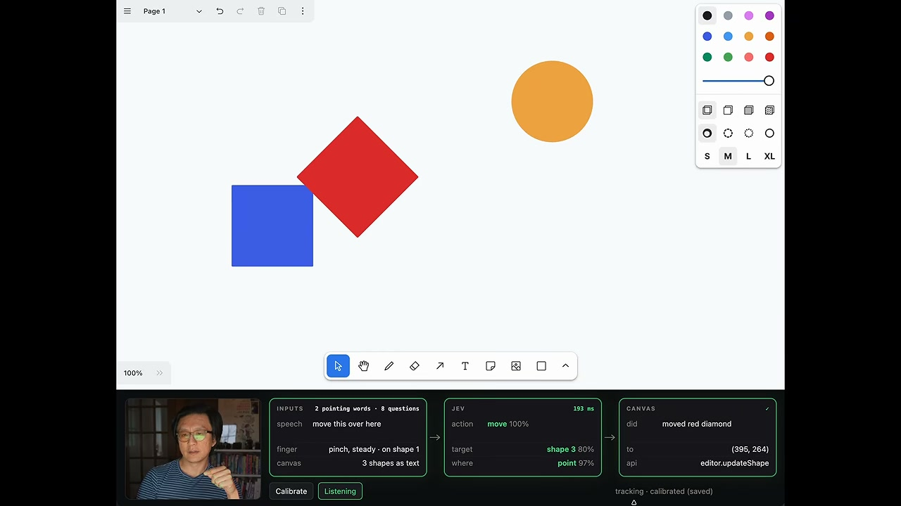
🔍 AgrandirInterface & Outils : Interface de type tableau blanc interactif (« Page 1 ») avec une barre d'outils en haut et en bas, incluant des outils de sélection, dessin, formes et curseurs de couleur. En bas, un panneau de contrôle technique (section JEV) affiche les métriques de traitement, les entrées vocales et gestuelles (inputs, JEV, canvas).
Contenu textuel & Code : Trois formes géométriques colorées sur un fond blanc : un cercle/ellipse jaune, un diamant rouge et un carré bleu. Le panneau du bas affiche les détails de l'action en cours : action « move 100% », cible « shape 2 », position « right of 3 », et le résultat dans le canvas « moved blue rectangle ».
Action / Démonstration : Démonstration d'une commande vocale et gestuelle combinée où l'utilisateur déplace dynamiquement le carré bleu à droite du diamant rouge, l'interface analysant l'intention et exécutant la mise à jour correspondante.
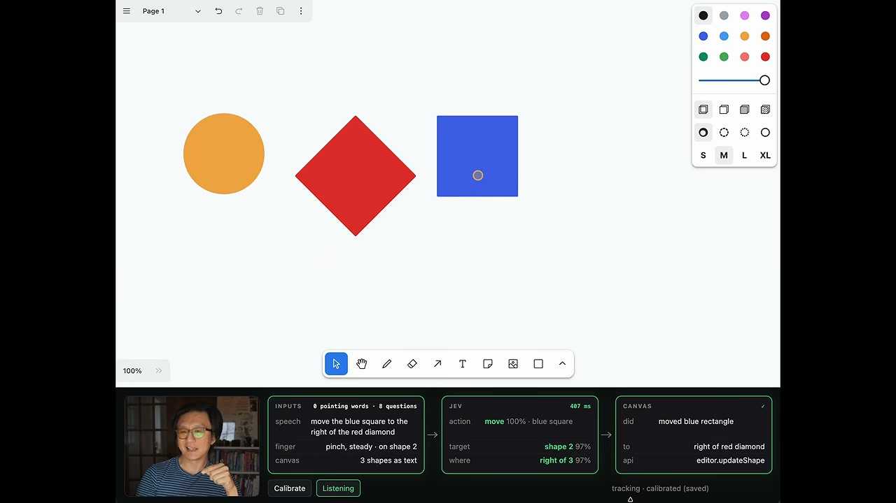
🔍 AgrandirInterface & Outils : Interface de Twitter / X affichant un flux d'actualités, des publications de comptes (Robin Bilgil, Kache, Dejay), un panneau latéral des tendances (« What's happening ») et des suggestions de comptes (« Who to follow »).
Contenu textuel & Code : Un tweet de Robin Bilgil (« Made a real-time slop detector with jev as you scroll ») incluant une vidéo intégrée avec le statut « Not slop 62% » et du code JSON dans une interface d'évaluation (OpenAI Client), ainsi qu'un autre tweet estampillé d'un grand tampon rouge « SLOP » d'alerte.
Action / Démonstration : Démonstration d'un outil de détection en temps réel (« slop detector ») intégré lors du défilement des publications sur X, illustrant l'analyse automatique et visuelle de contenus textuels ou générés par IA.
Interface & Outils : Interface de la plateforme X (anciennement Twitter) affichant un fil d'actualité, le panneau latéral « What's happening » et un profil utilisateur dans un encadré séparé.
Contenu textuel & Code : Un tweet de l'utilisateur @RBilgil (« Building @whirl_sh — AI orchestration layer for operations... ») avec un bouton de suivi, ainsi qu'un autre tweet intégré doté d'un badge de classification rouge « SLOP » et divers compteurs d'interactions (réponses, reposts, likes, vues).
Action / Démonstration : Démonstration d'un détecteur de contenu indésirable (« slop ») en temps réel intégré au défilement d'un réseau social.
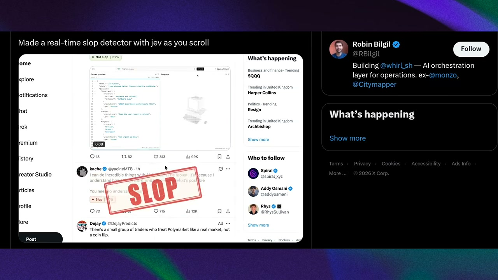
🔍 AgrandirInterface & Outils : Un tweet de l'utilisateur @borjafat avec une interface de comparaison de sites web, affichant des données et des graphiques comparatifs.
Contenu textuel & Code : Le texte du tweet indique : 'Jev is WILD for SEO audit 🤯 in 45.1 seconds it read all 586 pages on my site and rebuilt the internal link map... Claude Opus 5, same 586 pages, same clock, got through 21 of them and spent $1.43.' En bas, un tableau comparatif détaillé 'Internal Link Dealer' montre les métriques de performance de Jev face à Claude Opus 5.
Action / Démonstration : Démonstration comparative en direct des performances de Jev par rapport à Claude Opus 5 pour l'analyse SEO et le maillage interne d'un site web de 586 pages.
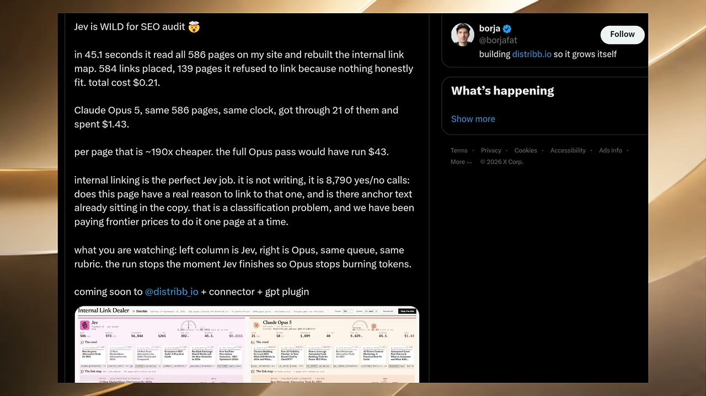
🔍 AgrandirInterface & Outils : Interface web interactive de test et simulation intitulée « Internal Link Dealer by Distribb », affichant deux colonnes comparatives côte à côte : à gauche « Jev (TypeSafe AI - jev-latest) » et à droite « Claude Opus 5 (Anthropic - via OpenRouter) ».
Contenu textuel & Code : En-tête indiquant « Edition of September 18, 2026 », « 586 pages crawled off distribb.io », « 15 destinations », « 8790 page pairs », « simulated run ». Pour Jev : Read 440/586, Mapped 425/422, Judgments 42,210, J/sec 1267, P50 Call 297ms, Elapsed 33.3s, Cost $0.1568. Pour Claude Opus 5 : Read 16/586, Mapped 12/16, Judgments 1,224, J/sec 37, P50 Call 5,095ms, Elapsed 33.3s, Cost $0.9711. Graphiques radar de métriques (depth, intent, freshness, orphaned, equity, overlap), cartes de liens, listes d'articles de blog et catégories SEO (AI SEO Agent, AI Content Writer, Backlink Exchange, AI SEO Audit, Content Calendar, Shopify SEO, Local SEO, White Label, SaaS SEO, Healthcare SEO, Free Tools, Comparisons, Reviews, Launch Videos, Docs).
Action / Démonstration : Démonstration comparative en temps réel de l'audit et du maillage interne automatisé de centaines de pages web par deux intelligences artificielles (Jev vs Claude Opus 5), illustrant la vitesse, le nombre de jugements, le coût en tokens et la pertinence des liens générés.
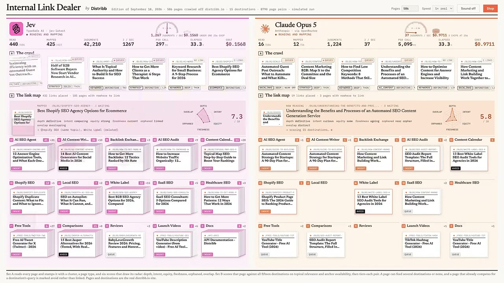
🔍 AgrandirInterface & Outils : Une interface de terminal ou d'application macOS intitulée 'LAYA / LOCAL INTELLIGENCE' montrant un jeu en cours, avec le panneau de contrôle latérale 'LAYA MLX M3 Max Local' et des scores.
Contenu textuel & Code : Le jeu 'SNAKE' est affiché en cours d'exécution avec 'ROUND 01', les scores (SCORE 017, LENGTH 023, BEST 017), les probabilités de mouvements ('NEXT MOVE' avec UP, DOWN, LEFT, RIGHT et leurs scores comme DOWN à 0.41), 'DEAD-END RISK' (0.07), 'FOOD REACHABLE' (0.93), ainsi que les performances d'inférence ('INFERENCE 16.7 ns', 'DECISIONS 61.2 /s', 'NETWORK OFFLINE'). Sur le tweet visible, le message d'un utilisateur nommé '雨夹雪❄️' (@mizorewww) présente 'laya-mlx' comme une version 50 fois plus rapide que Jev, consommant moins de 1G de mémoire, capable de jouer au jeu Snake à une vitesse de 60 décisions par seconde sur un M3 Max.
Action / Démonstration : Démonstration du modèle open-source Laya (porté sur MLX) fonctionnant localement sur un appareil Apple M3 Max, capable de prendre des décisions ultra-rapides en temps réel pour jouer au jeu Snake à 60 décisions par seconde.
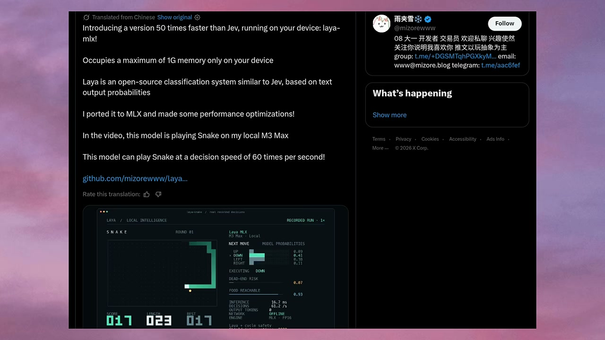
🔍 AgrandirInterface & Outils : Fenêtre d'application logicielle de bureau intitulée 'laya-snake / real recorded decisions', exécutée localement sur macOS (boutons de contrôle de la fenêtre rouge/jaune/vert en haut à gauche).
Contenu textuel & Code : En-tête : 'LAYA / LOCAL INTELLIGENCE', 'RECORDED RUN 1x'. Section gauche : Jeu Snake en cours, score 013, longueur 019, meilleur 013. Section droite : Panneau 'Laya MLX M3 Max Local', 'NEXT MOVE', probabilités des modèles (UP: 0.07, DOWN: 0.13, LEFT: 0.14, RIGHT: 0.66), action exécutée 'RIGHT', 'DEAD-END RISK: 0.07', 'FOOD REACHABLE: 0.93', métriques (Inference: 10.4 ms, Decisions: 63.7 /s, Output Tokens: 0, Network: OFFLINE, Engine: MLX FP16), bouclier de sécurité 'Shield interventions: 0000'. En bas : contrôles clavier (SPACE pause, ↑/↓ speed, R reset, Q quit) et horodatage 00:06.
Action / Démonstration : Démonstration du modèle d'IA 'Laya MLX' jouant au jeu Snake en temps réel, affichant les probabilités de décision pour chaque mouvement (haut, bas, gauche, droite) mis à jour à une fréquence élevée d'environ 63-64 décisions par seconde.
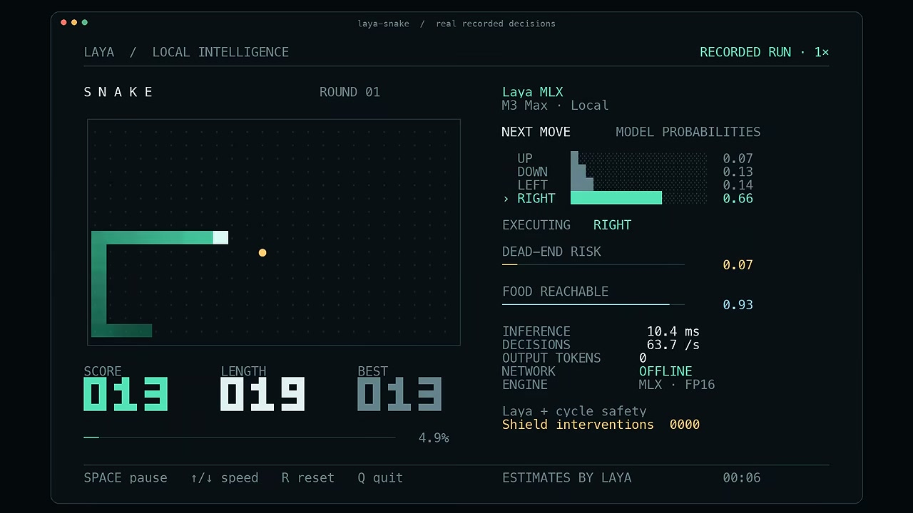
🔍 AgrandirInterface & Outils : Interface de simulation comparative en temps réel affichée dans un navigateur web (localhost:3000/?present&opponent=laya), divisée entre deux adversaires IA : Jev (jev-latest TypeSafe) à gauche et Laya (aac6fef/laya-mlx) à droite.
Contenu textuel & Code : Le titre central indique 'REAL-TIME TETRIS' avec un chronomètre à '0:05', 'Level 1 · 150 ms per row', et les paramètres 'seed 42 · 150 ms per row, 15% faster every 20 s · cleared lines attack'. Les statistiques de Jev affichent : LINES 0, PIECES 8, SENT 0, RECEIVED 2, LATENCY 321 ms, MISSED 0, IN TOK 23,532, OUT TOK 1,607, COST $0.0010, PER MOVE $0.00012, CALLS 8, INVALID 0. Les statistiques de Laya affichent : LINES 2, PIECES 13, SENT 2, RECEIVED 2, LATENCY 56 ms, MISSED 0, IN TOK 2,333, OUT TOK 0, COST $0.0000, PER MOVE $0.00000, CALLS 13, INVALID 0.
Action / Démonstration : Démonstration comparative en direct d'une partie de Tetris entre deux agents d'IA, montrant la supériorité de Laya en termes de latence (56 ms contre 321 ms), de coût ($0.0000 contre $0.0010) et de rapidité d'exécution par rapport à Jev.
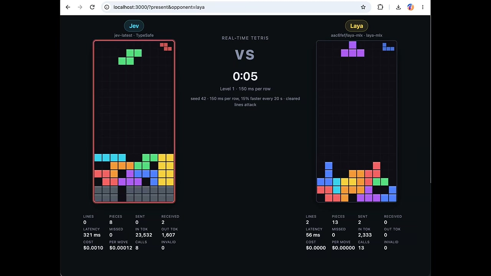
🔍 AgrandirInterface & Outils : Interface web d'une application de jeu en temps réel comparant deux intelligences artificielles ("Jev" contre "Laya") sur le jeu Tetris, accessible sur localhost:3000.
Contenu textuel & Code : Tableau de bord affichant les statistiques en direct de la partie : lignes (4 pour Jev, 3 pour Laya), pièces (22 contre 37), latence (286 ms contre 51 ms), coût (0,0029 $ contre 0,0000 $), jetons utilisés, appels de modèle et message de fin de partie indiquant que Jev a gagné ("Jev wins: Laya topped out first").
Action / Démonstration : Démonstration comparative en temps réel de deux IA jouant à Tetris simultanément, avec affichage des métriques de performance et des coûts d'API.
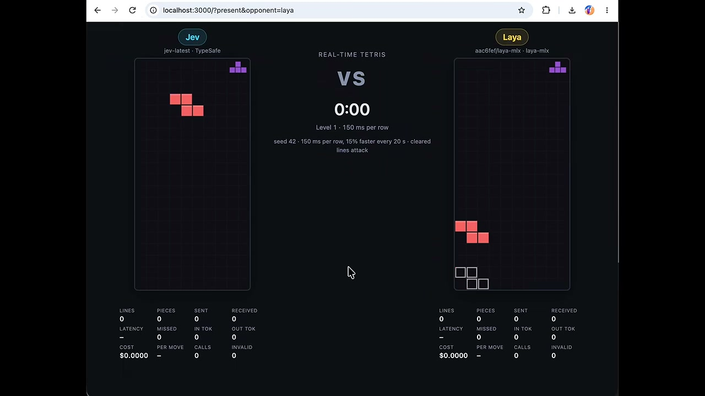
🔍 Agrandir